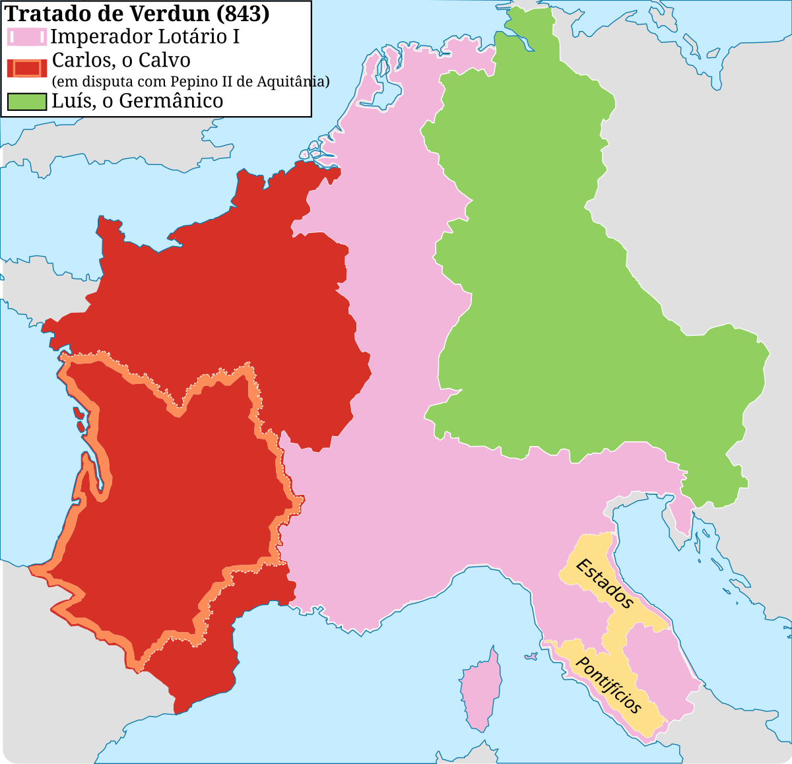

Império Carolíngio
Carlos Magno sucedeu Pepino no governo do reino franco e expandiu grandemente o seu território. Carlos Magno era fortemente aliado à Igreja de Roma, a qual ajudou no processo de cristianização de diversos reinos germânicos, como os lombardos, saxões e bávaros.
Após a morte de Carlos Magno, Luís, o Piedoso assumiu seu lugar, e após a morte desse, seus três filhos disputaram o título imperial. No fim de contas eles assinaram o Tratado de Verdun (843) que dividia o Império Carolíngio em três reinos.
Lotário ficou com a região Lotaríngia, porção que mais tarde daria origem a diversas localidades, como Países Baixos, Lorena, Alsácia, Borgonha, Provença, Reino Itálico, entre outras.
Para Carlos, o Calvo coube uma região que hoje em dia é principalmente parte da França moderna.
Luís, o Germânico recebeu a porção oriental, que posteriormente se tornaria o Reino da Germânia ou Reino Germânico.
Essa divisão enfraqueceu a autoridade central, acelerou o surgimento do feudalismo e gerou conflitos duradouros, especialmente na Lotaríngia, influenciando as rivalidades franco-alemãs que persistiriam por séculos. As consequências do tratado moldaram a estrutura política, cultural e territorial da Europa medieval e moderna.
